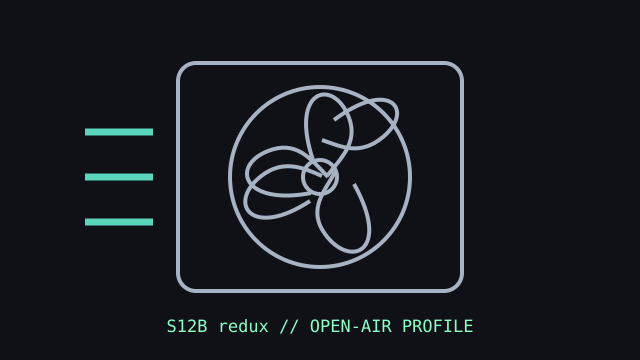

[ IDENTIFIED MODEL // NF-S12B redux-1200 PWM ]
Noctua NF-S12B redux-1200 PWM
A 120 mm airflow-focused redux fan with a 4-pin PWM connection. Its lower pressure rating favors unobstructed case ventilation over dense radiator duty.

Exact model: NF-S12B redux-1200 PWM. This entry does not describe the fixed-speed 1200 RPM version or NF-S12B redux-700.
Specifications
| Frame | 120 × 120 × 25 mm |
|---|---|
| Speed / airflow / pressure / noise | 400–1200 RPM; up to 100.6 m³/h (59.2 CFM); 1.29 mm H₂O; 18.1 dB(A). |
| Bearing | SSO bearing |
| Connector / control | 4-pin fan connector; PWM speed control. |
| Electrical | 12 V DC rated; maximum input current 0.075 A. |
| Fit and host compatibility | Standard 120 mm square case mount with 25 mm depth. Use on a radiator only if its manufacturer specifies 120 mm fans and the low-pressure airflow profile is adequate; verify frame spacing and header capacity. |
Installation
Check fan orientation and available cable reach before mounting. Use PWM control from a supported 4-pin header and consult radiator/case instructions for spacing and screw depth.
Manufacturer sources
- Noctua — NF-S12B redux-1200 PWM product pageExact model identity and product-line use.
- Noctua — NF-S12B redux-1200 PWM specificationsDimensions, performance, electrical limits, bearing, and connector for this SKU.